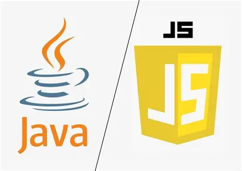
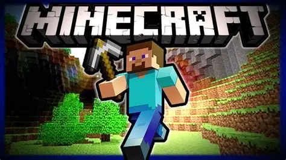

1995 — JavaScript e Java levam a programação para as massas
Em poucos meses de diferença, duas linguagens batizadas de forma parecida — o que causa confusão até hoje, apesar de tecnicamente não terem relação direta entre si — mudaram o alcance
da programação. Brendan Eich, contratado pela empresa Netscape, criou o JavaScript em um prazo apertado de poucos dias, para dar interatividade às páginas da web. Paralelamente, James
Gosling e sua equipe, na Sun Microsystems, lideraram a criação do Java, com o lema "escreva uma vez, rode em qualquer lugar".


Mudanças com o surgimento do JavaScript e do Java
Antes do JavaScript, uma página da web era só um documento estático — clicar em algo geralmente exigia recarregar a página inteira do servidor. O JavaScript permitiu que uma página
reagisse a cliques, validasse formulários e mudasse conteúdo na hora, sem recarregar nada. Já o Java resolvia outro problema antigo e caro para empresas: um programa escrito nele podia
funcionar em diferentes tipos de computador e sistemas operacionais sem precisar ser reescrito para cada um.

O JavaScript se espalhou por todo navegador do mundo, e o Java se tornou padrão em sistemas corporativos robustos, aplicativos Android e sistemas bancários de grande
escala.
JAVA E JAVASCRIPT:
as duas linguagens se tornaram, décadas depois, duas das mais usadas do planeta inteiro, cada uma dominando um território diferente — o JavaScript praticamente sozinho na
interatividade da web, e o Java em sistemas de grande escala que continuam rodando até hoje.
